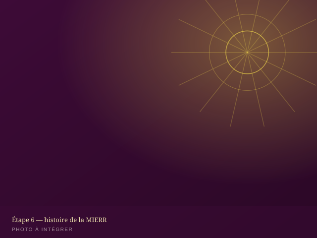

Notre identité, notre vision, notre histoire
La MIERR est une communauté chrétienne évangélique au service du réveil spirituel, de la restauration des vies et de la formation des leaders — vingt années de fidélité, de 2006 à 2026.
Une mission au service du réveil et de la restauration
La Mission Internationale Évangélique de Réveil et de Restauration (MIERR) est une communauté chrétienne fondée en 2006. Elle rassemble des croyants engagés dans l'annonce de l'Évangile, l'adoration, la formation biblique et l'accompagnement spirituel, avec la conviction que le réveil individuel précède la restauration collective.
Implantée localement et tournée vers les nations, la MIERR articule son action autour de trois piliers : l'annonce de la Parole, la formation des disciples et la transmission entre générations, portée par des départements dédiés aux femmes, à la jeunesse et aux jeunes filles, ainsi que par un institut de formation pastorale.

Un réveil qui restaure les destinées
Voir des vies transformées par l'Évangile, des familles restaurées, des leaders formés et une génération entière équipée pour porter la vision du Royaume jusqu'aux nations.
Annoncer, former, restaurer, transmettre
Prêcher l'Évangile sans compromis, former des disciples enracinés dans la Parole, accompagner la restauration des vies brisées et transmettre la foi d'une génération à l'autre à travers nos départements et notre institut biblique.
Nos valeurs
Foi
Une confiance entière en la Parole de Dieu comme fondement de toute vie et de toute œuvre.
Réveil
La recherche constante d'une vie spirituelle vivante, ardente et consacrée à Dieu.
Restauration
L'accompagnement des vies brisées vers la guérison, la dignité et la destinée retrouvée.
Formation
L'enseignement biblique rigoureux comme socle de la maturité et du leadership chrétien.
Mission
L'engagement à porter l'Évangile au-delà des frontières de la communauté locale.
Transmission
La formation intentionnelle des générations montantes pour la continuité de l'œuvre.
Vingt ans d'histoire
De la naissance de l'œuvre à la célébration de son jubilé, retracez les grandes étapes de la MIERR. Ce fil du temps est alimenté depuis assets/js/data.js : ajouter une étape ne demande qu'un objet supplémentaire dans le tableau timeline.
Organisation hiérarchique
La MIERR s'appuie sur une gouvernance claire, structurée autour de la présidence, de la coordination générale, des départements et des services opérationnels.